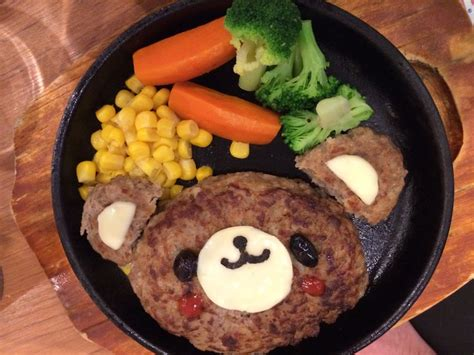

Bear Burger

Ingredients:
- 200 g ground beef
- Salt and pepper to taste
- 1 tablespoon oil
- 2 slices cheese (for ears)
- 2 black olives or peppercorns (for eyes)
- 1 small piece cheese or white chocolate (for snout/nose)
- 1 small piece black licorice or chocolate (for mouth)
- Corn, broccoli, and carrots (for sides)
Instructions:
- Shape the patty: Form ground beef into a round patty slightly larger than your skillet. Season generously with salt and pepper.
- Cook the burger: Heat oil in a skillet over medium-high heat. Cook the patty 3–4 minutes per side until browned and cooked through (160°C internal temperature). Don't press down—let it cook undisturbed.
- Assemble the face: While still in the pan (or after plating):
- Place cheese slices at the top corners for ears
- Add black olives or peppercorns for eyes
- Place a small white cheese piece in the center for the snout
- Use black licorice or melted chocolate to draw a smile
- Cook sides: Sauté or steam the corn, broccoli, and carrots separately until tender. Arrange around the bear on the plate.
- Serve immediately while the burger is warm!